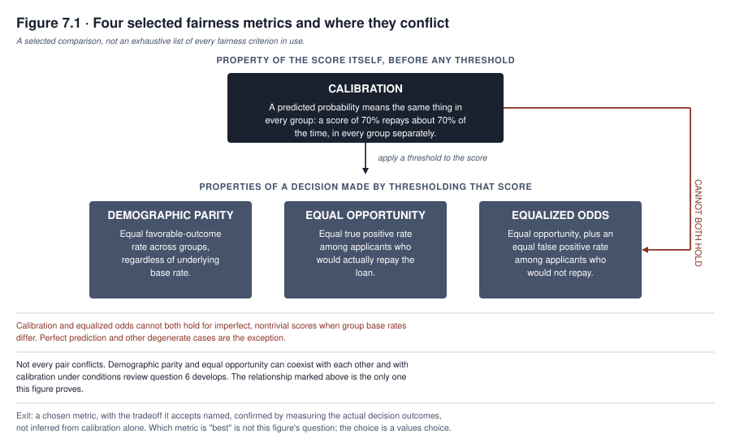
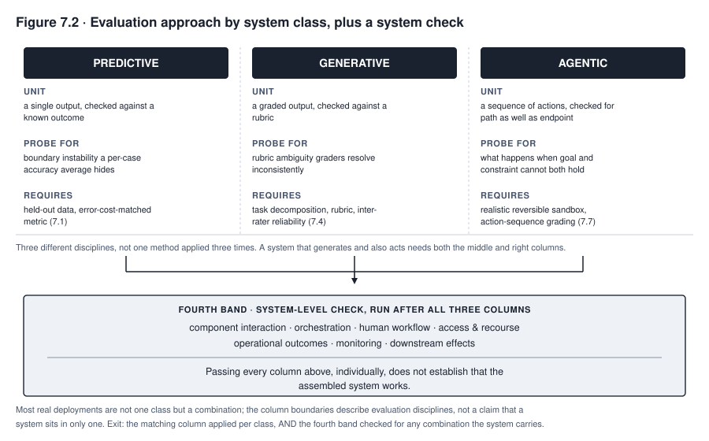
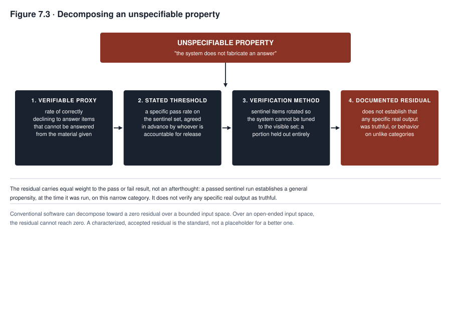

7. Testing, Evaluation, and Red Teaming
Meridian’s fairness review of the FAIRLEND ensemble ran four standard tests before the model risk function signed off. Approval rates were compared across protected groups. True positive rates were compared across protected groups. The model’s predicted probabilities were checked against actual repayment outcomes within each group. Every test passed at a threshold the review team considered reasonable. Then a member of the review team, reading the four results side by side instead of one at a time, asked a question nobody else had framed explicitly. If the approval rate is now equal across groups, and the true positive rate is also equal across groups, and the group base rates for actual repayment differ, how can the false positive rate also be equal? It cannot, not because the team made an error, but because the four things being asked for are not simultaneously achievable whenever the groups being compared actually differ in their underlying repayment rates. The review had been treating fairness as a checklist of properties a good model should have all of. It is not a checklist. It is a set of tradeoffs. Someone has to choose among them, on the record, and be prepared to explain the choice to a regulator, a plaintiff’s attorney, or an applicant who wants to know why the model treated their case the way it did.
This chapter teaches verification for systems whose behavior cannot be fully specified in advance, which is most of what this book has been building toward. Chapter 1 established that a generative system’s output is a plausible continuation rather than a verified fact, and that a rule extracted from data is confident on cases it has never actually seen. Chapters 5 and 6 established what data and model choices set up before a system is ever tested. This chapter is where all of that becomes an operational discipline. It covers what to test, how to test it, and what a passing test actually tells you. The chapter’s most demanding section shows how to specify a requirement for a property, like refusing to fabricate an answer, that resists being written down as a rule at all.
What you will be able to do
- Select and justify a fairness metric for a specific decision, and explain to a skeptical reviewer why several widely used metrics cannot all be satisfied at once when group base rates differ
- Design an evaluation set for a generative system, including a grading rubric and an inter-rater reliability check
- Explain benchmark contamination and the holdout discipline that survives it
- Recognize the specific, documented failure modes of using a model to grade another model’s output
- Structure a red team exercise, including scope, team composition, and what happens to a finding afterward
- Decompose a property that cannot be directly specified into a verifiable proxy, a stated threshold, a verification method, and a named residual
7.1 Performance testing
Before any of this chapter’s harder questions, a system has to pass the ordinary test of doing the narrow thing it claims to do, measured on data it has not seen during training. For a classifier, the appropriate metric depends on what an error actually costs, and choosing the wrong one produces a model optimized for the wrong failure. A system screening resumes for further review can tolerate a higher false positive rate, letting through more candidates than strictly necessary, because the cost of a false positive is a wasted interview. A system flagging patients for sepsis risk should weight false negatives far more heavily, because the cost of a missed case is a preventable death. Accuracy alone, treating both error types as equally costly, obscures exactly the distinction that matters for MEDASSIST and would never have been an acceptable metric for it in the first place. Regression tasks require an analogous judgment between metrics that penalize large errors heavily and metrics that treat all errors proportionally, and ranking tasks require a judgment about which position in a ranked list actually drives the outcome a user experiences.
Held-out data discipline underlies every number this section produces. A model evaluated on data it trained on will report a performance figure that describes its ability to memorize instead of its ability to generalize. The gap between the two is invisible unless the evaluation set was kept genuinely separate from training from the start, not merely sampled after the fact from data the model may have already influenced through earlier iterations of the same pipeline. Section 7.5 extends this discipline to a harder case, where the held-out set itself can leak into training through a channel the organization does not control.
A known correct answer to compare against is not always available on the timeline, or in the form, that testing needs. An outcome can be delayed, as when a loan’s repayment is not known until the loan matures years later, or selectively observed, as when a hiring model is checked only against people the organization actually hired, saying nothing directly about applicants who were declined. Other times it is contested, as when clinicians reviewing the same case disagree about whether it was high risk, or affected by the intervention being tested, as when a fraud model’s own flag changes what happens to a transaction and therefore what outcome gets recorded. Or it can be a proxy for the thing actually meant, the label problem Chapter 5 raised at the data layer and that testing inherits directly. None of this makes performance testing meaningless. It means the evaluation unit is better named a labeled or otherwise justified reference outcome, where available, than a known correct answer. A test report has to state which of these conditions applies to its own outcome variable, instead of presenting the comparison as though the reference were simply known.
7.2 Fairness testing
Fairness testing is the section this chapter weights most heavily, because it is where a technical choice most directly becomes a values choice. Several widely used metrics, introduced below as a selected comparison, not an exhaustive list, can conflict with each other under conditions that are mathematically settled rather than an open engineering problem.
Demographic parity requires that the proportion of each group receiving a favorable outcome be equal across groups, regardless of whether the groups actually differ in the underlying rate of whatever the outcome is meant to predict. Applied to FAIRLEND, demographic parity would require that the loan approval rate be the same for every protected group, full stop.
Equal opportunity requires that among applicants who would actually repay the loan, the approval rate be equal across groups. This is a narrower, more targeted requirement than demographic parity. It does not require equal approval rates overall, only equal rates among those who deserve approval by the model’s own definition of deserving.
Equalized odds requires equal opportunity’s condition and adds a second one. Among applicants who would not repay, the approval rate must also be equal across groups. This is equal opportunity plus an equal false positive rate, and it is a strictly harder condition to satisfy than either demographic parity or equal opportunity alone.
Calibration requires that a predicted probability mean the same thing regardless of group. Among all applicants a model scores at, say, a seventy percent likelihood of repayment, seventy percent should actually repay, within each group separately as well as overall. Calibration is the property that makes a risk score interpretable as a probability at all, and a lender relying on the score to price a loan is relying on calibration whether or not the fairness review named it explicitly. Calibration is a property of the score itself, before any cutoff is applied to it; demographic parity, equal opportunity, and equalized odds are properties of a decision made by applying a threshold to that score. Keeping this distinction explicit matters because a claim about the score’s calibration does not, by itself, settle what happens to any of the three threshold-based criteria once a specific cutoff is chosen.
The impossibility result, established independently by multiple researchers in the mid-2010s and now treated as settled in the fairness literature, is narrower than “no two fairness criteria can coexist,” and it is worth stating with its conditions attached, not as a blanket rule. The base rate is the actual proportion of the outcome being predicted. For imperfect, nontrivial risk scores, when the base rate differs between two groups, calibration cannot generally be combined with equal balance for the positive and negative classes, the condition equalized odds requires. Related thresholded criteria can also conflict with calibration under the same base-rate condition. Perfect prediction and other degenerate cases are the exceptions the result carves out, and the result does not show that every pair of fairness criteria is always incompatible with every other. Review question 6 asks the reader to work out a case where two of them coexist. This is worth understanding as a proof rather than a rule of thumb. A reviewer who treats it as a rule of thumb will keep looking for the clever fix that resolves the specific tension between calibration and equalized odds, but no such fix exists when the base rates genuinely differ.
The consequence for FAIRLEND’s review is the one the chapter opened with. Selecting which fairness property to prioritize is a decision about which kind of unfairness the organization is willing to accept, not a technical optimization with a single correct answer. A decision of that character needs a named, accountable owner and a documented rationale, not a default inherited silently from whichever metric a data science team happened to compute first. A calibrated score may still yield unequal error rates after thresholding, especially when base rates and score distributions differ; which threshold-based criterion ends up unequal under a calibrated score is a question to measure in the actual decision outcomes, not one calibration answers by itself. Meridian’s eventual decision, worked through in this chapter’s case in focus, prioritized equal opportunity over calibration because measuring the decision outcomes under each option showed that keeping calibration meant a materially higher false negative rate for one group. In the judgment of the people accountable for the decision, that was a more direct harm than the pricing complication that came with giving up calibration, a judgment reasonable people inside the same institution disagreed with. The disagreement itself was recorded, not resolved by silence.

Figure 7.1 is a map of a specific, narrow conflict, not four independent boxes to check off or a claim that every pair is mutually exclusive. Demographic parity and equal opportunity can coexist with each other, and with calibration, under conditions review question 6 asks the reader to work out directly; they are not proven incompatible in general. The pairing the mid-2010s impossibility result actually proves incompatible, for imperfect, nontrivial scores when group base rates differ, is calibration and equalized odds. This is the specific tension FAIRLEND’s review discovered, and every comparable fairness review will discover it if it looks for it, whether or not the discovery gets named explicitly in the review’s own documentation.
7.3 Robustness and adversarial testing
A model tested only against data resembling its training distribution has not been tested against the conditions most likely to produce a costly failure, because the conditions that matter most are frequently the ones furthest from what the model has seen. Distribution shift testing deliberately evaluates a model against data that differs from its training population along dimensions the deployment is likely to encounter. This extends the representativeness question Chapter 5 raised at the data layer into an explicit test performed before release, instead of a hoped-for property assumed to hold. Boundary behavior testing probes cases that sit at the edge of a model’s decision categories, where small input differences produce different outputs. A model that is accurate on average can still be unstable exactly at the boundary a real decision turns on, a fact ordinary accuracy metrics average away rather than surface.
Adversarial testing goes further, deliberately constructing inputs designed to cause a specific failure instead of sampling from a natural distribution. A predictive fraud model can be probed with inputs engineered to sit just inside the range the model treats as low risk, testing whether an adversary who understands the model’s decision boundary could exploit it. A generative or agentic system carries an additional, distinct category of adversarial input, one that Chapters 11 and 12 develop at length. This is an input crafted not to fool a classification boundary but to override the system’s own instructions, embedding a competing instruction inside content the system was only supposed to read. Testing for this category requires the instruction-hierarchy evaluation Chapter 6 flagged as an affordance that cannot be taken on faith from a vendor’s description and has to be checked directly, with adversarial inputs constructed specifically to probe it.
7.4 Evaluating generative systems
Testing a classifier asks whether a single output matches a known correct answer. Testing a generative system asks a different kind of question, because there is often no single correct output to match against, and the discipline this section teaches is a different one.
Eval design starts from decomposing a broad claim about quality into specific, checkable tasks. A claim that a documentation assistant “writes good clinical summaries” is not testable as stated. Decomposing it into whether it correctly extracts the admitting diagnosis, whether it flags missing information instead of fabricating it, and whether it uses terminology consistent with the hospital’s own documentation standards turns each part into a task a specific evaluation item can check. This decomposition, task by task and not claim by claim, is the same discipline section 7.9 develops in full for properties that resist specification even after decomposition.
Rubric construction turns each task into a graded standard instead of a pass or fail judgment call left to whoever happens to be reading. A rubric for the missing-information task states explicitly what counts as correctly flagging an absence and what counts as fabricating a value that was not present in the source material. It also states what counts as an ambiguous case that the rubric itself should resolve, not leave to a grader’s private judgment. Two graders applying an underspecified rubric to the same output will disagree, and the disagreement is a defect in the rubric, not in either grader.
Inter-rater reliability is how that disagreement gets measured instead of assumed away, and it depends on a specific workflow as much as on the statistic at the end of it. The rubric and its worked examples have to be frozen before the scored sample is graded. Each grader has to produce an independent first rating before seeing any other grader’s judgment or discussing the item, and only after those independent ratings are recorded does adjudication of the disagreements begin. This order matters, because a grader who sees another’s judgment first tends to anchor toward it, which manufactures agreement rather than measuring it. The statistic has to match the design. Cohen’s kappa applies to two graders scoring categorical judgments, weighted kappa to two graders scoring ordered categories, an intraclass correlation to suitable continuous ratings, and Krippendorff’s alpha where its added flexibility, more than two graders or a mixed measurement level, is actually needed. A low agreement score is not automatically a personnel problem to be solved by training the graders harder. It is often evidence that the rubric itself has not resolved the ambiguity that different graders are resolving differently. Low agreement can also come from inconsistent training, genuine subjectivity in the construct being rated, a skewed distribution of easy versus hard items, or uneven evidence quality across the sample. Distinguishing among these before rewriting anything is part of the review. Where the rubric is at fault, the fix is to rewrite it, log what changed and why, and retest agreement on a fresh sample before trusting the evaluation’s results.
7.5 Benchmark contamination
A public benchmark’s usefulness depends on the model being evaluated not having seen the benchmark’s own answers during training, and this condition is increasingly hard to guarantee. A model trained on a broad scrape of publicly available text is likely to have encountered the benchmark itself somewhere in that scrape, along with discussion of it, worked solutions to it, or both. Contamination inflates a model’s apparent performance on the contaminated benchmark without producing any genuine improvement in the capability the benchmark claims to measure. That inflation is invisible from the score alone, because a contaminated model and a genuinely capable model produce the same high number.
The holdout discipline that survives contamination is not a one-time fix but a standing practice. An evaluation set an organization builds and keeps private, never published or shared outside a small group with a specific need to see it, cannot be contaminated by a training process the organization does not control. This is precisely why section 7.9’s sentinel construct is built as a private, rotating set instead of being drawn from any public source. Where a public benchmark must be used, one warning signal, not a contamination audit on its own, is testing whether a model can complete a benchmark item verbatim from a partial prompt. Completing it that way would only be possible if the model had memorized the item. Completing the prefix is evidence of exposure, but failing to complete it does not establish that the benchmark was unseen, since a model can be contaminated on a paraphrased or lightly modified copy that a verbatim-completion test misses entirely. A more defensible check combines several signals. These include private and rotating held-out sets alongside the public benchmark, canary items planted to detect scraping, and a timestamp and version record showing when the benchmark was published relative to the model’s training cutoff. They also include a training-data provenance statement where the developer has published one, lexical and semantic overlap checks between the benchmark and known training sources, and repeated evaluation on transformed or reworded versions of the same items. Finally, they include an explicit statement of uncertainty where the training data cannot be inspected at all, rather than a silent assumption of no contamination.
7.6 Model as judge
Using one model to grade another model’s output, instead of a human, has become common because it scales in a way human grading does not, and it is widely misunderstood in a way that produces confident, wrong conclusions when its specific failure modes go unchecked.
Position bias is the tendency of a judge model, asked to compare two candidate outputs presented in a fixed order, to systematically favor whichever position, first or second, regardless of content. The effect is strong enough that swapping the order of the same two outputs can flip the judge’s verdict. Self-preference is the tendency of a judge model to rate more favorably an output that resembles its own style or that was produced by a model in its own family. This means using a model to judge outputs, including its own family’s, is a specific, checkable source of distortion, not a theoretical concern. Verbosity bias is the tendency to rate a longer answer more favorably independent of whether the additional length adds correct or useful content, which rewards padding over precision unless the rubric explicitly corrects for it.
A pattern reported in the model-as-judge literature, not yet a universal law to be assumed for every task and judge model, is that correlation with human judgment tends to degrade most on exactly the cases where human graders themselves disagree most. That means a judge model can be least trustworthy precisely on the hard, contested cases where its judgment would need to be most trustworthy to be useful, and most trustworthy on the easy cases where a cheaper check would have sufficed anyway. Whether that pattern holds for a specific judge model and task is itself something to check, not assume, which is why using a judge model at all needs a validation process, not only an awareness of the three biases above. That process swaps the order in which the two candidate outputs are shown to the judge and checks whether the verdict flips, which tests directly for position bias. It controls for length, either by instructing the judge to disregard it or by normalizing scores against it separately, to test for verbosity bias. It blinds the judge to which system produced which output, particularly where the judge model’s own family is among the systems compared, to test for self-preference. It also runs more than one judge model, from different families where feasible, and checks whether they agree, since a bias specific to a single judge cannot be caught by that judge alone. And it anchors a sample of the judge’s verdicts against human ratings on the same items, concentrated on the contested cases this section has flagged as the hardest. That check also covers prompt sensitivity, score calibration, inter-judge disagreement, and sensitivity to the reference answer used. A contested case a validated process cannot resolve with confidence is routed to human review rather than accepted on the judge’s verdict alone. Using a judge model to scale evaluation is not disqualified by any of this. But skipping the validation process, and trusting a judge model’s verdict on a genuinely contested case the same as its verdict on an easy one, is a specification error this section’s own findings make predictable, not surprising.
7.7 Testing agentic systems
An agentic system takes actions instead of only producing output. Testing it is a distinct discipline from both classifier testing and generative evaluation, because the object being evaluated is a sequence of decisions with consequences rather than a single output that can be checked in isolation.
A sandbox with realistic tools and reversible consequences is the precondition for testing an agent honestly at all. An agent tested only in a stripped-down environment that does not resemble its production tool access will pass tests that say nothing about how it behaves once given the actual scheduling system, the actual file access, or the payment authority it will hold in production. An agent tested directly against production systems, on the other hand, risks the exact irreversible harm testing exists to prevent. This is why the sandbox has to be realistic and reversible at once, instead of trading one property for the other.
Evaluating action sequences instead of single outputs means grading the path an agent took to a result, not only the result itself, because two agents can reach the same acceptable final state by paths that differ enormously in the risk they carried along the way. TALENTSCREEN’s scheduling component, once it acts autonomously rather than only recommending, has to be evaluated on whether it checked availability before committing to a time, not only on whether an interview eventually got scheduled. A path that skips the availability check and later cancels is a materially worse outcome for the candidate, even where the final scheduled state looks identical to an evaluator checking only the endpoint.
Deliberately probing what an agent does when its goal conflicts with its constraints is the testing step most often skipped. It requires constructing scenarios where succeeding at the assigned task and staying within a stated boundary cannot both happen, and observing which one the agent sacrifices. An agent instructed to schedule an interview within a candidate’s stated availability, placed in a scenario where no slot exists that satisfies every stated constraint, reveals its actual priority ordering by what it does next. It may report the conflict and ask for guidance, silently relax a constraint it was not authorized to relax, or fabricate a resolution that appears to satisfy every constraint on the surface without actually doing so. This category of test has no equivalent in classifier or generative evaluation and is, for an agentic system, not optional.
A sandbox, action-sequence grading, and a goal-versus-constraint probe are necessary and still not sufficient, because an agent that passes all three can still fail once operational conditions a stripped-down test never produces are introduced. A complete agent test process adds the following stages before a system is considered tested. First, freeze the exact versions of the agent, its model, its prompts, its tools, its permissions, its memory contents, and its environment, so a later failure can be traced to a specific configuration instead of an unrecorded one. Second, state the goals, the constraints, the prohibited actions, the escalation rules, and measurable postconditions in advance of testing, not inferred afterward from what the agent happened to do. Third, test normal tasks with the same, production-equivalent tool permissions and representative state the agent will actually hold, not a broadened test account that would mask a permission-boundary failure. Fourth, test malicious and malformed instructions arriving from the user, from retrieved content, from tool output, and from the agent’s own memory. An agent that resists a hostile instruction typed by a user can still follow the same instruction when it arrives inside a document, a webpage, or an API response the agent was only supposed to read. Fifth, test timeouts, retries, partial failures, stale state, duplicate actions, and concurrency, where more than one instance of the agent or more than one agent acts on shared state at once. Sixth, run long-horizon tests repeatedly to measure variance and compounding error, since an agent correct on a single fresh turn can still drift into an incorrect belief over an extended interaction that a one-shot test never exercises. Seventh, verify the actual side effects and postconditions in the systems the agent touched, not only the natural-language response it returned, since a response can describe an action the agent did not actually take, or took incorrectly. Eighth, exercise human pause, override, rollback, recovery, and incident escalation directly, rather than assuming they work because they were designed. Ninth, preserve full execution traces, triage every finding, remediate, retest independently, and add the failure to a regression suite so it is checked again on every future version instead of re-discovered by accident.

Figure 7.2 lays out three genuinely different disciplines, not one evaluation method with three sets of examples. A predictive system’s unit of evaluation is a single output checked against a labeled or otherwise justified reference outcome, where available, per the ground-truth caveats section 7.1 raises. A generative system’s unit is a graded output checked against a rubric, with inter-rater reliability confirming the rubric itself is sound. An agentic system’s unit is a sequence of actions checked for the path taken, not only the endpoint reached, with a deliberate test of what the system does when its goal and its constraints cannot both be satisfied. A team that runs only the predictive column’s tests against a system that also generates or acts has tested a fraction of what the system actually does. Even a team that correctly runs all three column-specific disciplines still owes the system a combined, system-level check afterward. A predictive component, a generative component, and an agentic controller can each individually pass their own column’s tests. The assembled system, including its orchestration, its human workflow, and its access and recourse paths, can still fail in ways no single column’s test was designed to catch. Most real deployments are not one class or another but a combination, and the figure’s column boundaries describe evaluation disciplines, not a claim that any given system sits in only one column.
7.8 Red teaming
Red teaming is structured adversarial evaluation, distinct from the testing this chapter has covered so far in that its explicit purpose is to find the failure a standard evaluation was not designed to look for. It is conducted by people whose job in the exercise is to attack the system rather than to confirm it works. The process this section teaches has seven stages, and the stage most often skipped is the one that turns a finding into a closed loop instead of a one-time discovery.
First, authorize the exercise and record, before any testing begins, the system version under test, the named owners, the threat model the exercise is testing against, and the scope and explicit exclusions. Record also the environment the testing will run in, the rules governing test data, and the conditions that would stop the exercise early. Scope has to be stated before the exercise begins, naming which categories of harm the exercise is probing for and which are explicitly out of scope for this particular exercise. An unscoped red team exercise either wanders unproductively across every conceivable harm at shallow depth, or narrows implicitly, without anyone deciding to, to whatever the specific red team happens to think of first.
Second, design scenarios and the evidence each one expects to produce across safety, security, privacy, misuse, fairness, and operational failure. Team composition matters at this stage, because a red team drawn entirely from the system’s own development team will miss what that team’s own assumptions make invisible to them. That is why an effective exercise typically includes people without a stake in the system’s success, and, for higher-stakes systems, external participants with no institutional loyalty to the result coming back clean. Technique categories give the exercise structure. These include adversarial prompting for a generative or agentic system, boundary and edge-case probing carried over from section 7.3, and scenario-based social engineering attempts, where the target is not the model’s technical boundary but a human operator’s willingness to be misled by a plausible-sounding request.
Third, execute the exercise with reproducible traces, protecting the people, systems, and data involved in the testing itself. Fourth, triage and rate every finding, and assign each one a named owner and a deadline. Fifth, remediate the finding or document, through a decision by an authorized decision maker, that the residual risk is being knowingly accepted instead of fixed. Sixth, retest independently, by someone other than whoever implemented the fix, and add the case to the system’s regression evaluation so it is checked again on every future version. Seventh, close the finding only once that evidence exists; a finding marked fixed that was never independently retested is a claim of closure the exercise has not actually earned. Feedback runs in both directions. A retest that fails routes back to remediation, and an incident or a monitoring signal discovered later routes back to the first stage, updating the threat model for the next exercise.
Documentation and disposition, carried through all seven stages instead of added at the end, are where a red team exercise either produces governance value or produces an exercise that happened once and changed nothing. A red team report that lists findings without recording what happened to each one, through triage, remediation, and independent retest, is a report that documents the exercise occurred without documenting that it mattered.
7.9 Specifying the unspecifiable
The discipline this section teaches is what most distinguishes verification for AI systems from verification for conventional software.
Some properties resist direct specification entirely. “The system does not fabricate an answer” cannot be verified directly, because verifying it directly would require checking every possible output against every possible fact the output could touch, an unbounded task no test suite can complete. The property is real, and it matters, and a test plan that gives up on it because it cannot be checked directly has abandoned exactly the requirement most worth keeping.
The method that recovers a testable requirement from an unspecifiable property has four parts, and skipping any one of them produces a test that looks rigorous without actually being so. First, decompose the property into a verifiable proxy, something narrower than the full property that actually can be checked, chosen because passing the proxy is evidence, though not proof, that the fuller property holds. Second, state a threshold, how well the system must perform on the proxy for the result to count as passing, stated as a specific number, not a qualitative impression. Third, specify the verification method, exactly how the proxy will be measured, by whom or by what, on what data, on what schedule. Fourth, and the step most often skipped, document the residual, what the proxy does not cover, stated explicitly rather than left implicit, so that a later reader of the test result knows what passing it does and does not establish.
A full worked example makes the method concrete, using a construct this book proposes for teaching purposes, not a term of art drawn from an established standard. This proposed, recurring, held-out answerability evaluation is called a sentinel evaluation here, for the way it stands watch on an ongoing basis rather than checking once at launch. It is a fixed-format check run periodically, before and after a batch of a generative system’s real work, not only once before launch. It is built as a set of items deliberately weighted toward questions that cannot be answered from the material the system has been given. The only correct response to a sentinel item is therefore a refusal or an explicit statement of uncertainty, not an answer. This is the proxy. A system’s rate of correctly declining to answer the unanswerable items stands in for its broader tendency to fabricate rather than for direct verification of every real answer it produces. The threshold is stated as a specific pass rate on the sentinel set, agreed in advance by whoever is accountable for the system’s release, not adjusted after seeing a disappointing result. That same person also has to be able to say what evidence supports the threshold chosen. The verification method specifies exactly how the sentinel items are sampled, rotated so the system cannot be tuned specifically to the visible set, and secured so the full set is not exposed to anyone able to adjust the system. It also specifies how they are scored against a stated standard and periodically revalidated, with a portion held out entirely so that some part of the check remains uncontaminated by anyone’s knowledge of what it contains.
The residual has to be stated as plainly as the pass rate itself. A sentinel evaluation establishes the system’s propensity to fabricate on a specific, narrow category of item, unanswerable questions structured like the sentinel set, at the specific time the check was run. It does not establish that any particular real output the system produced on a particular day was truthful, and it does not establish the system’s behavior on categories of question the sentinel set does not resemble. Treating a passed sentinel evaluation as verification of a specific work product, rather than as a periodic, population-level check on a general tendency, is a traceability failure in the sense Chapter 3 gave that term. It is a claim of assurance attached to an artifact the evidence does not actually cover.

Figure 7.3 reads top to bottom as a derivation, not a checklist completed in any order. The unspecifiable property sits at the top because it is the thing actually wanted and the reason the exercise exists at all. The four boxes beneath it are not four independent tasks; each depends on the one above it, a threshold is meaningless without a proxy to apply it to, and a verification method is meaningless without a threshold it is checking against. The residual sits at the bottom at the same visual weight as the pass or fail result above it. The figure’s argument is that a residual omitted is a claim of completeness the evidence does not support, not a minor footnote to an otherwise finished verification.
State the terminal difference plainly, because it is easy to read the four-part method as a temporary workaround for a problem better tooling will eventually solve, and it is just as easy to overstate the contrast with conventional software in the other direction. Some AI systems make residual uncertainty especially prominent because their behavior is probabilistic, their inputs and environments are open ended, and the property being tested may resist complete specification. Conventional software can face the same limits when its environment, specification, state, or interactions are not fully bounded. Formal verification, where it is used at all, establishes a specified property under stated assumptions, but it does not prove every real-world behavior or remove the risk of a wrong specification. Verification therefore states the property, the model, the assumptions, the coverage, and the residual, rather than claiming that one technology class can always reach zero residual while the other cannot. Verification for AI reaches a characterized and accepted residual, not a verified state, and that is not a temporary compromise pending better methods, or a concession that AI is held to a lower standard than software achieves in practice. It is the honest standard, and the one to hold a system to.
7.10 Release readiness
This chapter’s methods produce several kinds of result, including performance figures, fairness metrics with the tradeoff named, robustness findings, generative evaluation scores with their rubrics, red team findings with their dispositions, and sentinel results with their residuals. Every one of these has to be integrated into a single documented decision before a system reaches production. That decision has to be made by someone with the authority and the accountability to make it, not inferred simply because no individual test happened to fail outright. On the buy path, release readiness carries an additional question this chapter’s earlier sections have already prepared the reader to ask. Given what a vendor’s own testing, disclosed through the system card Chapter 6 taught how to read adversarially, actually covers, what does the deploying organization still need to test itself? The answer determines whether the vendor’s coverage and the organization’s own coverage together add up to a readiness decision the organization can actually stand behind.
Naming the decision is not the same as being able to make it, and what makes the decision usable is a release record with a specific, minimum set of fields, not a narrative summary of how testing went. That record states a specific set of fields explicitly, without exception. It names the exact system and model versions being released; the intended uses and the uses the release explicitly prohibits; and an evaluation coverage map showing which of this chapter’s methods were run against which claim, and which claims remain untested. It also carries every unresolved finding from testing or red teaming, carried forward instead of dropped once triaged; the criteria the release decision was actually measured against; and the named signoffs of everyone accountable for the decision. It records every residual risk accepted knowingly, with the name of who accepted it; confirmation that legal and rights review has occurred, required wherever the system touches a regulated decision or personal data; and the monitoring plan that will run after release. It states the training the system’s operators have received; a rollback or deactivation test confirming the organization can actually revert if the release fails; and incident readiness, meaning a stated plan for what happens when a failure is detected in production. Finally, it fixes the deployment’s operational constraints and the specific changes, in the system or its environment, that would trigger a re-review before the next scheduled one. It also sets an expiry date on the approval itself and a revalidation schedule stating when the release will be checked again regardless of whether anything has changed. A release record missing one of these fields is not a smaller version of a complete one; it is a decision made without knowing, or without recording, something the decision depended on.
Case in focus: a fairness decision made on the record, and an audit built without training data
FAIRLEND and TALENTSCREEN · Hypothetical, following the running cases
Meridian’s model risk function discovered that FAIRLEND’s ensemble could not satisfy equalized odds and calibration simultaneously, once the applicant pool’s base rates were examined by group. It brought the choice to a committee that included model risk, legal, and a consumer advocate the bank retained specifically for reviews of this kind. Repayment is the positive class this chapter’s definitions use throughout, so a creditworthy applicant, one who would in fact repay, who is wrongly declined is a false negative, not a false positive, and the committee’s own numbers were read on that basis. The committee considered two options. Prioritizing calibration would keep the model’s risk scores meaningful as probabilities across every group, supporting consistent pricing. But it would also tolerate a materially different false negative rate between groups, meaning creditworthy applicants in one group would be wrongly declined at a higher rate than creditworthy applicants in another. Prioritizing equal opportunity would equalize the true positive rate, so that creditworthy applicants faced the same approval odds regardless of group. That came at the cost of calibration, meaning the same risk score would imply a different actual repayment likelihood depending on group, complicating the pricing model downstream. The committee chose equal opportunity, on the stated reasoning that an unequal rate of wrongly declining creditworthy applicants was a more direct harm to individuals than a pricing model whose scores meant different things across groups once calibration was given up. What to do about the pricing complication was treated as a separate, harder question than the committee’s first framing had allowed. A per-group pricing adjustment, restoring something like calibration by pricing each group’s risk separately, was raised and then set aside. Adjusting price by protected-group membership, even to correct for a statistical artifact rather than animus, raises its own fair-lending exposure under Regulation B that no amount of engineering work resolves on its own. Any such adjustment would also need legal review before it could be treated as a fix at all. The committee’s memo instead listed the options actually available to it. These included reconsidering the target variable the model was trained to predict, improving the training data’s representativeness, and choosing a different decision rule. They also included adding a review-and-recourse path for declined applicants, limiting where the system could be deployed, or declining to deploy it. One committee member dissented in writing, arguing that giving up calibration’s guarantee that a risk score meant the same thing across groups deserved more weight in the decision than the majority had given it. The dissent was recorded in the decision memo instead of resolved by majority vote and left unmentioned. The decision, the reasoning, and the dissent all became part of FAIRLEND’s governance record, available to a future reviewer who wants to know not only what was decided but what the alternative would have cost and who thought the decision was wrong.
Calloway’s audit of TALENTSCREEN faced a different problem entirely. There was no training data to test against at all, because the vendor had disclosed only that the model was trained on “a large and diverse dataset of resumes and hiring outcomes,” a sentence that names nothing checkable. Unable to audit the training data section 7.2’s methods assume, Calloway’s compliance team instead ran an outcome-based audit using its own applicant data. For a full hiring cycle, it tracked the tool’s pass-through recommendations against applicant demographic categories it collected separately for exactly this purpose. It computed the same four metrics section 7.2 defines, not on the vendor’s training data, which it could not see, but on its own deployment population, which it could. The audit found a materially lower pass-through rate for one age category, a finding the vendor’s own documentation had not surfaced and had no obligation to surface. The vendor’s testing, to the extent any had been disclosed, covered its own broader customer base, not Calloway’s specific applicant pool. Calloway’s finding did not establish why the disparity existed, since the training data producing it remained invisible. It did establish that the disparity existed in Calloway’s own deployment, which was enough to trigger a mitigation Calloway’s own legal team judged necessary, regardless of the vendor’s position on the model’s overall fairness.
The two audits differ in what they had available to work with, a full technical postmortem in one case and only outcome data in the other. They nonetheless share a structure this chapter has argued for throughout. A fairness or evaluation finding is not complete until it produces a documented decision, made by a named party, that a later reviewer can trace back to the reasoning behind it. That decision may affirm a tradeoff accepted on purpose, or it may trigger a mitigation for a gap a vendor’s own disclosure never required it to close.
Summary
Verification for AI systems has to answer a harder question than verification for conventional software, because much of what these systems do cannot be checked against a single correct answer and some of what they need to do cannot be specified directly at all. Performance testing picks the metric that matches what a specific error actually costs, and held-out data discipline is what keeps the resulting number honest.
Fairness testing is this chapter’s central section, because two of several widely used criteria, calibration and equalized odds, cannot generally both be satisfied for imperfect scores whenever the groups under comparison differ in their underlying base rates. That is a mathematical fact, not an engineering shortfall, and not a claim that every pair among demographic parity, equal opportunity, equalized odds, and calibration is always incompatible. Selecting which criterion to prioritize is a values decision requiring a named, accountable owner rather than a default computed by whoever built the model. Robustness and adversarial testing probe distribution shift, boundary behavior, and deliberately constructed failure inputs, including the instruction-override inputs specific to generative and agentic systems. Evaluating generative systems requires eval design, task decomposition, rubric construction, and inter-rater reliability, a distinct discipline from classifier testing, not a variant of it. Benchmark contamination degrades public evaluation silently, and private, rotating, partly held-out evaluation sets are what survive it. Model-as-judge grading carries documented, specific biases, position, self-preference, and verbosity, and degrades most exactly on the contested cases where its judgment would need to be most trustworthy. Testing agentic systems means a realistic, reversible sandbox, grading action sequences, not only endpoints, and deliberately probing what a system does when its goal and its constraints conflict. Red teaming finds what standard evaluation was not designed to look for, and only produces governance value when scope, team composition, and finding disposition are all documented.
Specifying the unspecifiable is this chapter’s core method. It decomposes a property that resists direct verification into a proxy, a threshold, a verification method, and an explicitly documented residual, illustrated in full through a proposed sentinel evaluation that checks a general propensity, not any single output’s truth. Open-ended inputs, probabilistic behavior, and properties that resist complete specification make residual uncertainty especially prominent for AI systems, though conventional software can face the same limits when its own environment or specification is not fully bounded. Verification for AI reaches a characterized, accepted residual instead of a verified state, not because AI is held to a lower bar, but because the property, model, assumptions, and coverage available to state make that the honest description of what has actually been established.
Evidence carried forward. This chapter’s output for the rest of the book is evaluation evidence. That evidence includes the coverage map of which methods were run against which claim, every finding with its disposition, every documented residual, and a release recommendation grounded in that coverage instead of in the absence of a failed test. Chapter 8 binds this evidence, together with Chapter 5’s and Chapter 6’s, into an actual deployment decision.
Review questions
COMPREHENSION
Explain, using base rates, why a model cannot simultaneously satisfy calibration and equalized odds when two groups have different underlying rates of the outcome being predicted.
Distinguish evaluating a generative system from evaluating a predictive classifier, and explain why inter-rater reliability matters specifically for the former.
APPLIED
A team is building a sentinel evaluation for a customer-support generative system. Specify the verifiable proxy, a plausible threshold, the verification method, and the residual you would document, following section 7.9’s four-part structure.
An organization is deciding whether to use a judge model to grade a batch of ten thousand generated summaries for accuracy. Identify two specific biases from section 7.6 that could distort the results, and describe a check you would run to detect each.
SPOT THE RISK
- A team reports that its agentic system passed all functional tests, defined as reaching the correct final state in every test scenario. Identify what this testing approach has not checked, and explain what section 7.7 requires in addition.
COMPARE AND DECIDE
- Construct a confusion matrix, actual counts of qualified and unqualified candidates and how each is decided, for two candidate groups with different qualification base rates, choosing numbers so that equal opportunity and demographic parity both hold at once despite the base-rate difference. Then identify what happens to the false positive rate in your example. State what each metric protects, and explain why this shows that the two criteria are not proven mutually exclusive in general, unlike calibration and equalized odds.
RUNNING CASE
TALENTSCREENUsing the case in focus, explain what Calloway’s outcome-based audit could and could not establish about the tool’s fairness, and specify what additional access or information would be needed to close the gap between what was tested and what section 7.2’s full methodology requires.
A system that has been tested is not yet a system that is ready to operate. The next chapter turns to deployment and release, and to the uncomfortable pattern this book will show recurring across every system class. A system is usually ready for production before the organization around it is, and releasing anyway, because the technical checklist is complete, is where a well-tested system meets an unready operator and produces a failure that no test in this chapter was designed to catch.